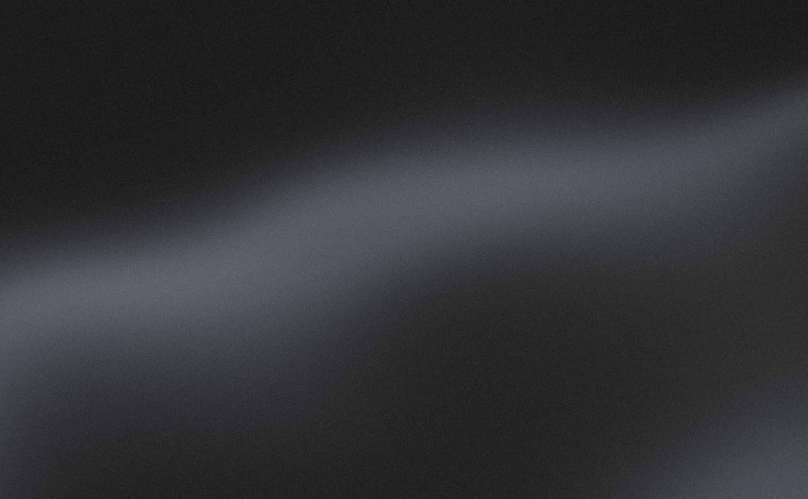
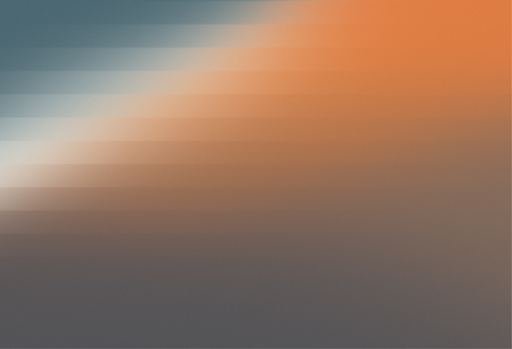

An nice day at the beach
This minimalist gradient wallpaper catches the main elements of an beach (the blue water, the foam of the soothing waves of the ocean, the warm sand glinting the sun, and some rocky terrain) in an nice clean gradient.


This minimalist gradient wallpaper catches the main elements of an beach (the blue water, the foam of the soothing waves of the ocean, the warm sand glinting the sun, and some rocky terrain) in an nice clean gradient.
more of this collection soon :)